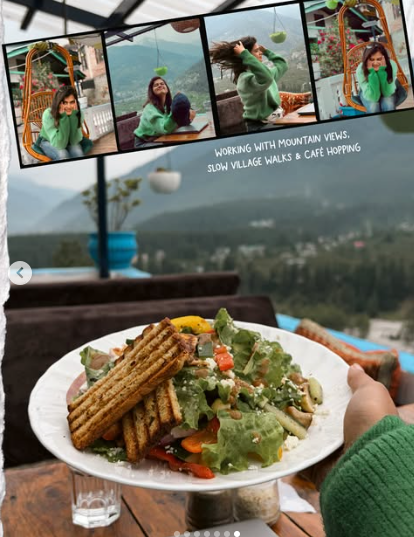
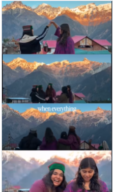
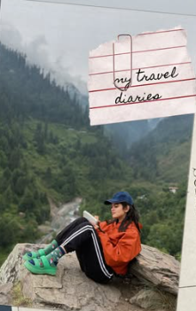

OffMap is engineered carefully for conscious souls who crave to travel slower. To hike remote passes without rushing, sit with panoramic wilderness coordinates longer, and live out locations deeply.





We design journeys around immersion, not attractions. Every route, village, trail, and stay is chosen to help you experience a place as it truly exists—not as a checklist destination.
Spend more time in fewer places and uncover stories most travelers never encounter.
Connect with communities, traditions, and everyday life beyond the tourist lens.
An inside look into how our team identifies, establishes, and maps out unhurt, culturally rooted rural communities and mountain assets across India.
We pack our equipment and set out into remote high-altitude zones or sub-tropical forest belts alone, mapping trails and finding safe points away from crowded tourist maps.
We stay inside native houses, aligning with tribal councils, localized mountain shepherds, and generational craftsmen to secure authentic kitchens and clean, rustic homestays.
We tie the pieces together into a comfortable, unhurried flow that sends your trip investments directly back into supporting rural mountain economies and preserving heritage ecosystem networks.
Raw, unedited fragments from our traveler community diaries. Swipe or scroll horizontally to explore.

I lost track of time by morning three. We spent hours sitting by a riverbed watching shepherds guide their flocks. A complete internal reset."
— Photo by Riya M.
Slowing down allowed us to actually see the landscape rather than just photographing it
— Photo by Kavya K.
OffMap doesn't shuttle you between gift shops. They introduce you to real, living ecosystems.
— Photo by Tenzin L.
We spent hours sitting by a riverbed watching shepherds guide their flocks. A complete internal reset.
— Photo by Ananya S.Follow our journeys, behind-the-scenes scouting trips, and traveler stories.
View More On Instagram ↗Strictly bounded rosters. Balanced, spacious itineraries designed intentionally for small groups joining from PAN India.
 4 Days
4 Days
Stay inside traditional mud-brick homesteads, trace high glacial runoff paths, and enjoy raw astronomy sessions away.
 3 Days
3 Days
Walk ancestral living root networks, gather forest herbs alongside tribal foragers, and spend clear afternoons next to hidden springs.